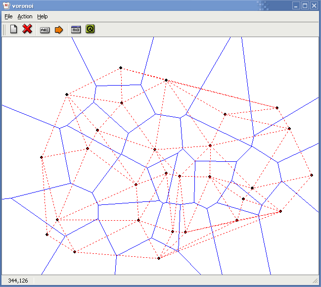

Design and Analysis of Algorithms Term Project
Voronoi Diagram
系級: 資工碩 95 級
姓名:陳建華
學號: M933040015
一、程式設計:
在程式語言的部份，我選用Trolltech公司的Qt Framework來設計GUI的介面，以及繪圖的部份，Qt本身包含了一些好用的機制，特別是Signals-Slots的機制，方便GUI上各個元件的互動。
程式中使用到DiagramView、DiagramLine、DiagramPoint、DiagramBisector等物件，這些是由我從Qt本身內建的class中繼承而來，這些class是圖型化的物件，另外還有2個物件，分別是VoronoiAlgo、ConvexHull，前者是整個演算法的主要架構，透過操作Diagram系列的物件來完成Voronoi Diagram，後者為計算ConvexHull的部份。
在程式的撰寫當中，必需注意線的分類，有線有三種狀態：
|
直線 |
是一條在平面上無限延伸的線。 |
|
射線 |
有一個端點，另一邊則是無限的延伸。 |
|
線段 |
由兩個端點所構成。 |
一開始我沒有特意去區分三種線段的區別，我只透過線是否交於畫布的邊界來斷判是否為無限延伸，Merge的時候不會有問題，但是在找Convex Hull的時的問題就來了，所以後來在DiagramBiesctor的物件裡面加了三種狀態的屬性。
依照課本的演算法，在Merge之後，必需把延伸到另一驟的線段去除，這個部份必需透過HP上的每一條直線來決定線段是否要被刪除。課本上尋找Voronoi Diagram -- Convex Hull的方法在一種情況下，將不能運作，就是當所有的線連成一直線時，就無法延著射線找到完整的Convex Hull，這部份必需用例外來處理。
在merge的部候，兩點畫中垂線時，必需透過這兩點週遭的邊來找交點，交點必需是最接近線段起始點的下方，唯一的例外就是HP的第一條中垂線，因為他沒有起始點，這也必需當作例外來處理。
在GUI的介面操作上，在程式左下方的Status-Bar上標示出目前滑鼠所在的位置；當滑鼠移到已經存在的點上面時，會出現Tooltips來顯示該點的位置；另外還有一個對話框，用來輸入特定的X軸坐標和Y軸坐標。
二、實驗結果:
使用的平台為:
|
Operation System |
Linux Gentoo 2.6 |
|
CPU & RAM |
Intel(R) Pentium(R) 4 CPU 1500MHz , 768M |
|
Compiler |
GCC version 3.3.4 20040623 |
程式目前完成度估計約85%，其中未完成的部份為處理Convex Hull例外的部份，以及merge後刪除線段的判別有小瑕疪。大致上一般的Case都可以順利的完成，一些Special Case可以因為Convex Hull的例外而導致無窮迴圈、或是Merge時找不到交點。
因為Qt本身有支援Windows的版本，所以我另外編了一份可以在Windows上執行的版本以及其相對應的動態連結檔(DLLs)。程式中有加上判斷無窮迴圈的功能，當程式無法順利執行時，會跳出Rum time error的對話框，接著就關閉程式。
執行結果:

三、結論與心得:
因為電腦的變數並不能完整的表示出大整數，目前是使用double的變數來存放所有的坐標，當交點在無限遠處時，double將不能滿足問題的需求，程式可能會有不可期的錯誤發生。在這次的專題當中我體會到Voronoi Diagram的例外之多，也很佩服發明此演算法的M. I. Shamos 和D. Hoey，能在nlog(n)的時間內完成。這次程式碼的量是我目前為止交過的程式作業當中，份量最重的一次。